动物自由巡游与定点巡逻
走一段、歇一会儿 · 状态切换

一直在走，像上了发条
按播放，动物确实动了——可它是一刻不停地走，从开局走到下课，一秒都不停。真实的动物不是这样：走一阵、停下来嗅嗅、再继续走。给它加一个「走 / 歇」的开关，动作立刻就活了。
// AnimalRoam.cs —— 第 2 版：从「一直走」改成「走一段、歇一会儿」（完整脚本）
// 整段可以直接复制、覆盖原文件；标 ①②③④ 的是这一页新加的
using UnityEngine;
public class AnimalRoam : MonoBehaviour
{
public float speed = 2f; // 移动速度
public float turnSpeed = 90f; // 每秒转多少度
public float walkTime = 2f; // ① 新增：一次走多久
public float restTime = 1.5f; // ① 新增：一次歇多久
private float timer;
private float targetAngle; // 目标朝向
private bool walking = true; // ② 新增：true=走，false=歇
void Start()
{
targetAngle = transform.eulerAngles.y; // 开局先记住自己朝哪儿
}
void Update()
{
// 计时：走够 / 歇够，就把状态翻一次
timer += Time.deltaTime;
if (timer > (walking ? walkTime : restTime))
{
walking = !walking; // ③ 新增：走 ? 歇
timer = 0f; // 计时清零，重新数
if (walking) targetAngle = Random.Range(0f, 360f); // 重新上路前换个方向
}
// 只有「在走」才平移；歇着就原地不动
if (walking) { // ④ 新增：歇着就不 Translate
transform.Translate(Vector3.forward * speed * Time.deltaTime);
}
// 转向仍然每帧推进，歇着的时候顺手把身子慢慢转到位
float step = turnSpeed * Time.deltaTime;
float angle = Mathf.MoveTowardsAngle(transform.eulerAngles.y, targetAngle, step);
transform.rotation = Quaternion.Euler(0f, angle, 0f);
}
}代码讲解
- 只多了一个变量：
walking记住「现在是走还是歇」，其余照旧——这一页是在 V1 上加功能，不是重写。 walking ? walkTime : restTime是三目运算符：正在走就拿「走多久」当门槛，正在歇就拿「歇多久」当门槛——一句话管两种时长。walking = !walking是「开关」写法：真变假、假变真，按一下切换一次（课件17 的isFollowing也是这一手）。timer = 0f不能省：不清零的话下个阶段接着往上加，会立刻又被判定「到点了」，状态来回狂闪。if (walking)只包住平移那一句：歇着就不做Translate，动物停在原地；而转向写在if外面，所以歇的时候身体还在慢慢摆正，不会僵住。- 换方向放在「要开始走」那一次：只有准备重新上路才需要新方向；歇着挑方向没有意义。
- 它在哪儿走都一样：这一页只是让它走走停停更生动，动物依然不知道场地长什么样——会出什么乱子，看下面那张卡。
bool walking 这一个变量。可是，它还是不知道场地长什么样
动物是走得像样了，可它依然不知道场地长什么样——多看一会儿就会发现三个毛病：
- 一直往前走，几步就走出草地，然后悬在空中或者掉下去
- 撞到墙、撞到树直接穿过去（或者卡在墙里抖）
- 转了方向接着走，轨迹毫无章法，像一群没头苍蝇
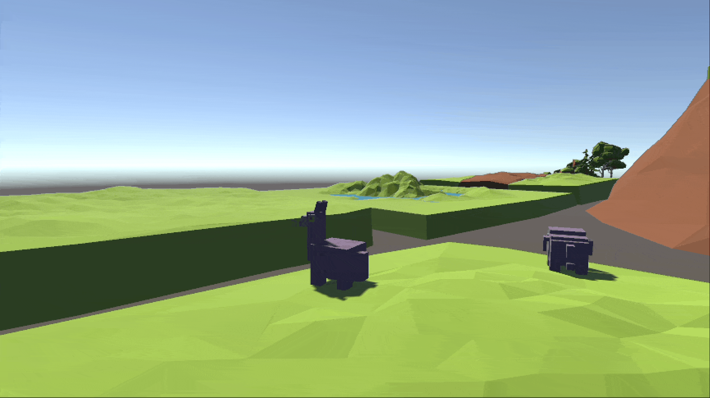
那能不能让它「知道路」？——脚本得先知道「哪里是地面、哪里是墙、哪里能走」。也就是说，得先给场地画一张「哪里能走」的地图。下一张就来做这件事。
导航网格（NavMesh）
上一页留下的问题很简单：动物不知道场地长什么样——所以它会冲出草地、穿过墙、像没头苍蝇。要让脚本知道路，得先给场地量出一张「哪里能走」的地图。
Unity 里这张地图，就叫导航网格（NavMesh）：它标出场景里哪片地面能让动物走。
它不用手画，是引擎替你算出来的——这个「算」的动作就叫烘焙（Bake）。下面几步，就从装工具开始，把这张地图烘出来。
给场地画一张「能走的地图」
- 点击
窗口 → 包管理器，打开「包管理器（Package Manager）」窗口。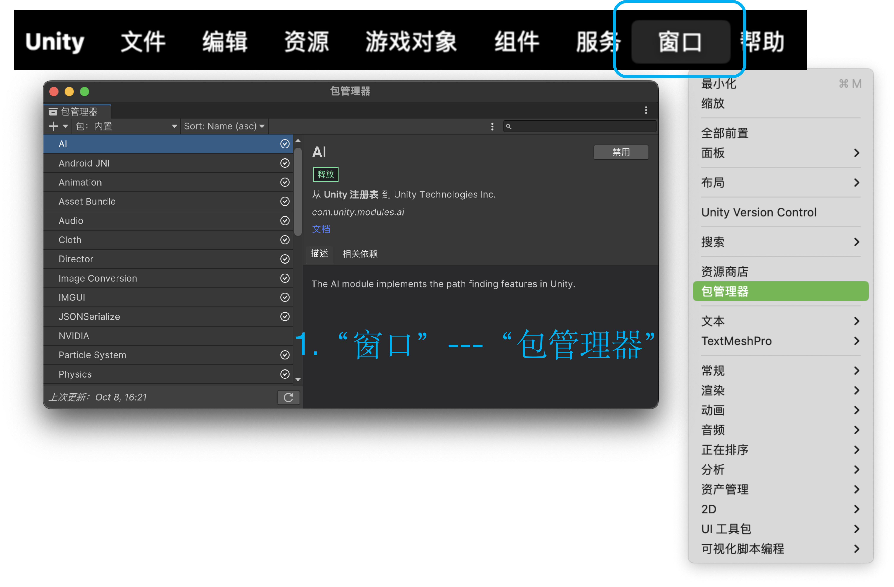
- 把左上角的包类型切到「Unity 注册表」，搜索 AI Navigation，点「安装（Install）」。
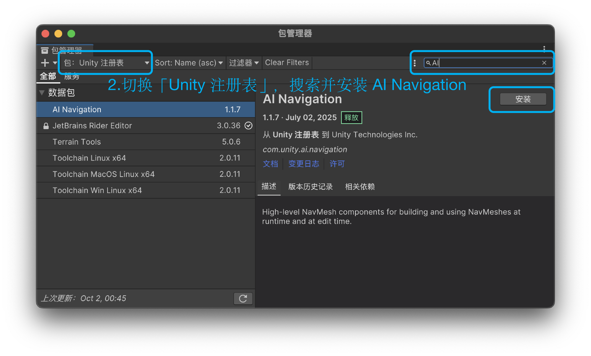
- 在层级窗口选中场景中所有的地形（花草树木石头等等），在检查器勾上「静态的（Static）」，弹窗选「是，更改子对象」。

- 点
窗口 → AI → 导航（过时），打开「导航（过时）」窗口。
- 在「导航（过时）」窗口切到「烘焙（Bake）」页，点「烘焙（Bake）」。

- 代理半径（Agent Radius）：动物的「身宽」——设得越大，越窄的缝就越容易被判成走不了
- 代理高度（Agent Height）：动物有多高——太矮的洞它就钻不过去
- 步高（Step Height）：能迈上多高的台阶——比它高的坎会被当成墙
- 最大坡度（Max Slope）：能爬多陡的坡——超过这个角度的斜坡算不能走
- 下落高度 / 跳跃距离：默认
0，即不往下落、也不跳；本课的动物只在平地上走，保持默认即可
- 点完烘焙，Unity 会在场景文件所在的目录下新建一个与场景同名的文件夹，里面放着一个
NavMesh.asset——刚才那张「能走的地图」就以这个文件的形式存了下来。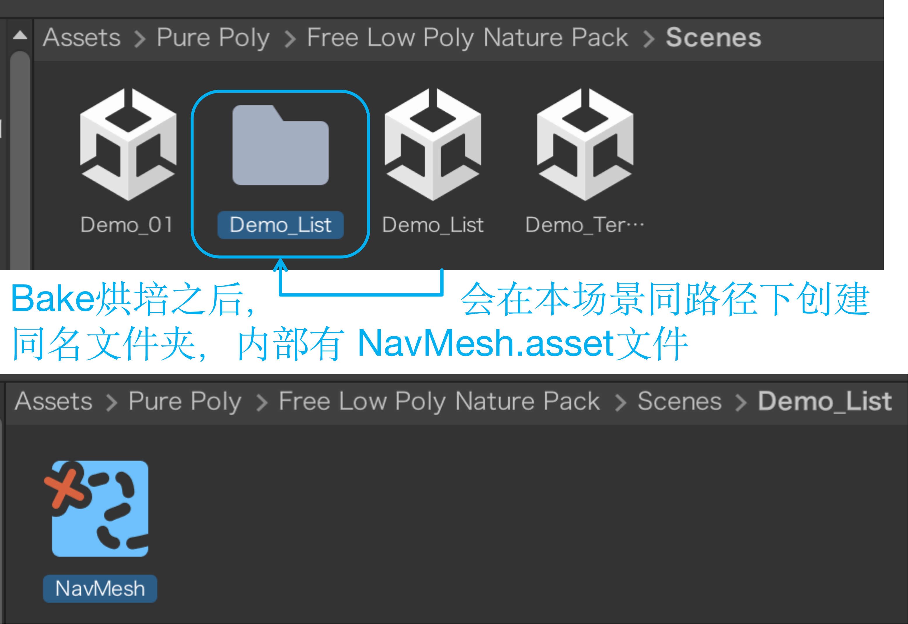
- 它不是场景里的物体，而是一份数据文件——和场景文件放在一起，删掉它导航数据就没了
- 换电脑、交作业时要连这个文件夹一起拷走，不然动物又会乱撞
- 下次再点烘焙，会直接覆盖这个文件
- 场景里出现的那片蓝色区域，就是导航网格（NavMesh）——它标出了「动物能走的地方」。

导航网格代理 · NavMeshAgent
给动物预制体加上「导航网格代理」
选中 动物预制体 → 点检查器里的 添加组件 → 搜索 导航网格代理（Nav Mesh Agent）。组件是加在预制体上的，所以这一下六只动物全都有了。

导航网格代理（Nav Mesh Agent）的参数
加完组件，双击动物预制体，在场景窗口里一看——凭空多出了一个绿色的圆柱：那就是「导航网格代理」本人。

它代表动物在导航世界里占的位置，下面这些参数都是围着它转的。要动的值分三组看——
- 基准偏移（Base Offset）：碰撞圆柱相对枢轴点的偏移。圆柱的位置是跟着模型的原点算的，而动物模型的原点一般在脚底——这一项不抬起来，圆柱就有一半埋在地里
- 半径（Radius）：动物「占多宽」，用来算它和别的代理、和障碍之间要不要让开。它不是模型的包围盒
- 高度（Height）：动物从「头顶的障碍物」下面穿过时，需要多高的净空
- 速度 / 角速度 / 加速度（Speed / Angular Speed / Acceleration）：走得最快多快、转身有多快、起步与刹车有多急
- 自动刹车（Auto Braking）：快到目标点时自动减速。巡逻、反复换目标这类行为建议取消勾选——否则每次接近目标都会「一顿」，看着像卡住了
- 停止距离（Stopping Distance）：离目标点多近就算「到了」。代码里
agent.remainingDistance < 0.5f就是和它配合的，两个值差得太远，动物要么「绕着目标点转圈」、要么「提前停下」 - 自动重新寻路 / 区域遮罩（Auto Repath / Area Mask）：前者＝走不过去时自动再算一条路；后者＝「哪些区域允许走」。本课只烘焙了默认区域，保持默认即可
为什么这个圆柱包裹不好动物
先说两个事实：刚加完组件，圆柱多半和动物是对不上的；而且就算来回调，也很难做到严丝合缝。为什么？原因有四条——
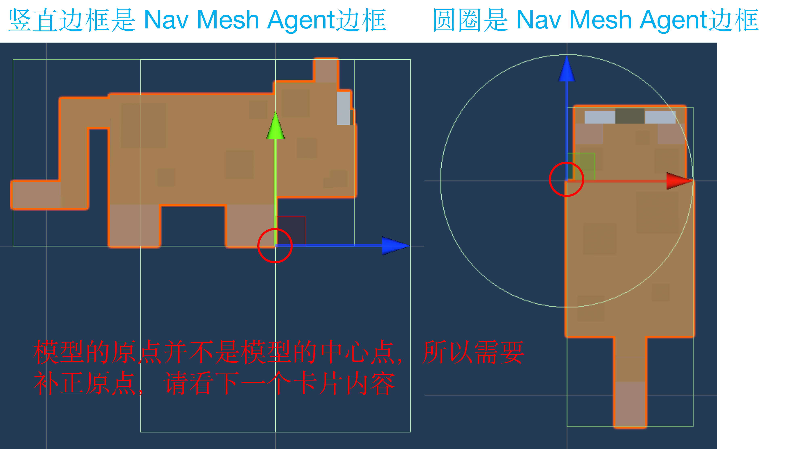
- 它不是「包围盒」，是「占位声明」：官方手册写明，圆柱只用来算碰撞和避让——半径＝「我占多宽」，高度＝「我从低矮处穿过需要多高净空」。它不参与寻路烘焙，「包住模型」本来就不是它的任务
- 它按模型的「原点」定位，而原点和「身体中心」是两回事：圆柱是围着对象的原点画的——原点在哪，圆柱就围着哪。而原点在建模时就定死了：有的动物在脚底（圆柱一半踩进地里），有的偏在身体一侧或尾巴那边（圆柱整个歪到旁边）。竖直方向的偏差，抬「基准偏移」能补；水平方向的偏差，它补不了——后面那张卡再说
- 它永远是竖直的：模型自己转，圆柱不跟着转——模型朝向、缩放不规整时，只会更难贴合
- 一套参数要管六只动物：参数挂在预制体上，牛、大象和鸡体型差好几倍，一个圆柱不可能同时包住最大的和最小的
所以别追求「刚好包住」：半径按身体（不算耳朵、尾巴、角）填一个折中值，让六只动物都「大致占住自己的位置」就够了。真正决定它能走到哪里的，是上一页烘焙时那组参数。
那这个圆柱该怎么收拾？——下面两张卡：先「把原点补正」，再调参数。
把原点补正：给动物套一层空父物体
模型的原点写在网格里，在 Unity 里改不了——但可以绕过去：给动物再套一层「壳」，让这层壳的原点落在身体中心，再把「管移动」的组件都放到壳上。改的是这个预制体内部，课件15 的生成逻辑不受影响。
这一步是「结构」上的问题，先做——结构摆正了，再去下一张卡动参数。
- 先到六个预制体上，把
Nav Mesh Agent、Rigidbody、Animal Roam、Box Collider四样统统移除——组件不能跨对象拖（只能在同一个对象内排序），等下要在壳上重新加，留着只会变成两份互相打架。（双击预制体 → 选中组件 → 点右上角「设置按钮（⋮）」→「移除组件」→ 退出；六只都清一遍）
- 确认一下：工具栏左上角从「中心」切成「轴心」，看绿方块（原点）确实不在身体正中，才需要往下做

- 新建一个空对象（
游戏对象 → 创建空对象），存为预制体——它就是那层「壳」；紧接着把原来的模型拖进这个空对象，变成子物体（位置会自动变成相对值，动物不会跳）。名字起个能认出来的就行（预制体资产名不受影响）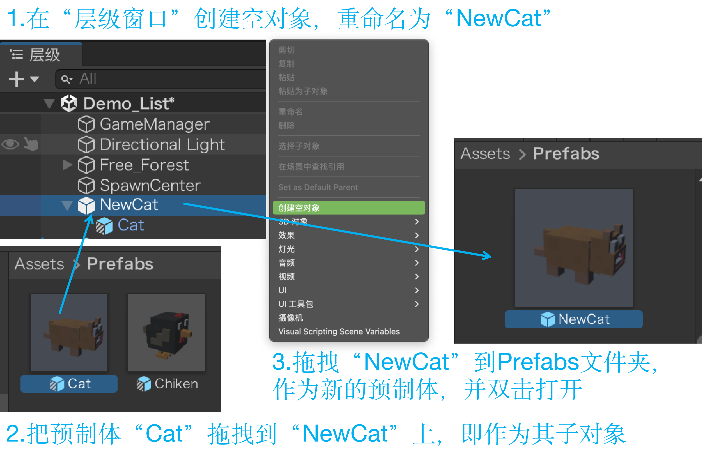
- 切到「俯视」视图，把这层壳摆到动物身体的正中心
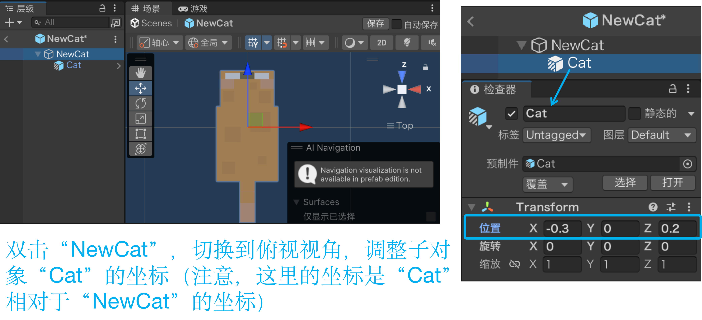
- 选中这层壳，用「添加组件」把
Nav Mesh Agent、Rigidbody、Animal Roam、Box Collider重新加回来（Rigidbody的「是运动学的」在下一页补上；Box Collider给壳一个能被「走近检测」触发的碰撞体，课件17 会用）
加完Box Collider，边框不会自己贴合：默认只是壳原点处一个 1×1×1 的小方块，套不住动物。点组件上的「编辑碰撞体（Edit Collider）」，在场景里拖六个面，把绿框拉到刚好裹住动物（也可以直接改「中心（Center）」「大小（Size）」两个值）——调好之后，预制体是这样：
- ⚠️
Animator千万别挪：动画是按「相对 Animator 所在对象的层级路径」播的，挪上去动画就不播了。所以脚本里取动画要写GetComponentInChildren<Animator>()（课件18 会用到） - 回场景看一眼：圆柱已经落在身体中心
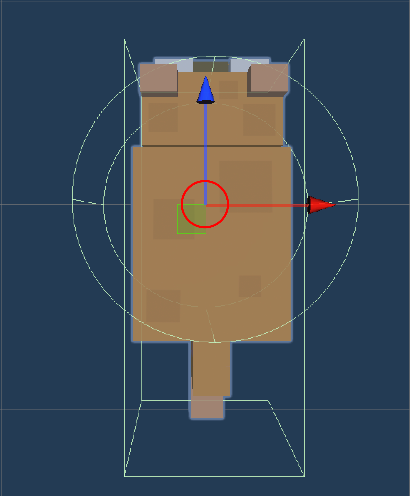
六只动物是六个预制体，各偏各的——偏得明显的补正一下，偏一点点的直接放过就行。

Box Collider——只要和地面、别的动物一碰，物理引擎就把它往外顶；导航代理又要把它拽回路线。两边较劲，动物就在原地抽搐。解决办法：选中刚体，勾上「是运动学的（Is Kinematic）」，把移动权完全交给导航代理。
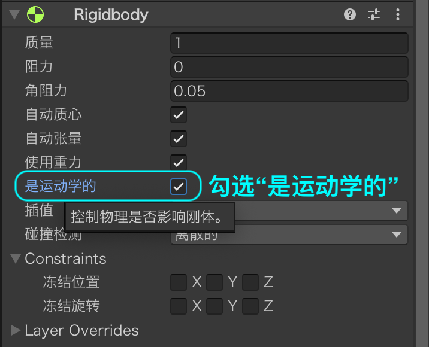
new Vector3(r.x, 1f, r.y)，高度要改回贴地（y 取地面高度）。六只动物 · 壳的 NavMeshAgent 参数一览
六只动物都按「把原点补正」那张卡的方法套了空父物体（壳），在壳上挂了导航网格代理。下面每只一张图：在检查器里看壳的导航网格代理的「基准偏移 / 半径 / 高度」，在层级窗口里看子对象动物的 X / Z 坐标——模型水平偏了多少，全记在这两列。
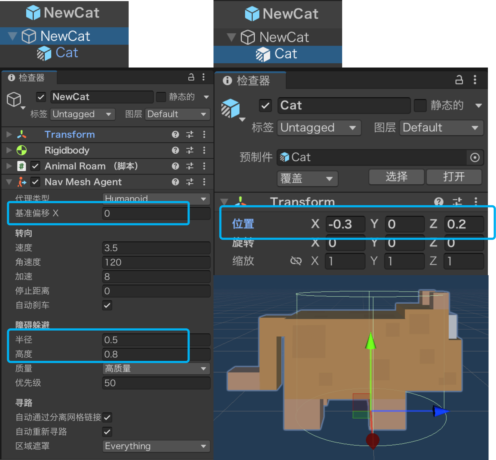
猫（Cat）

鸡（Chiken）
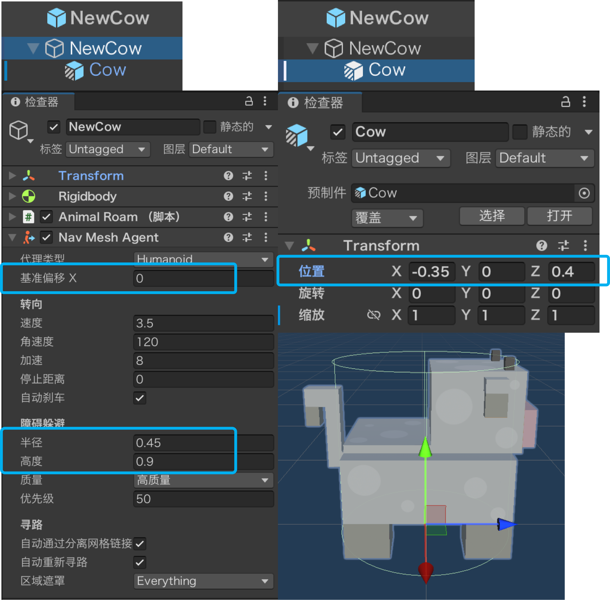
牛（Cow）
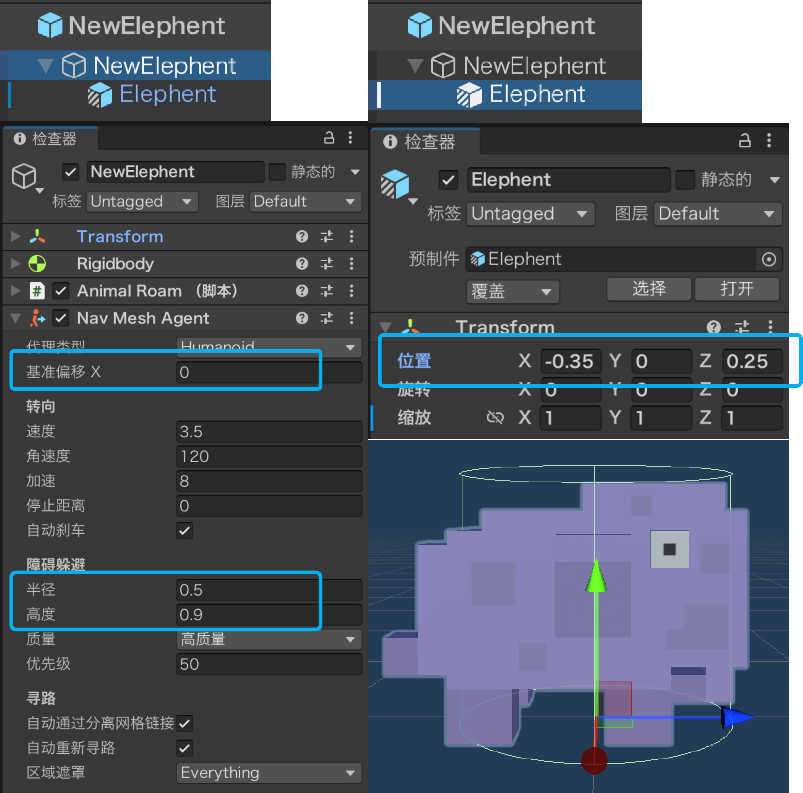
大象（Elephent）
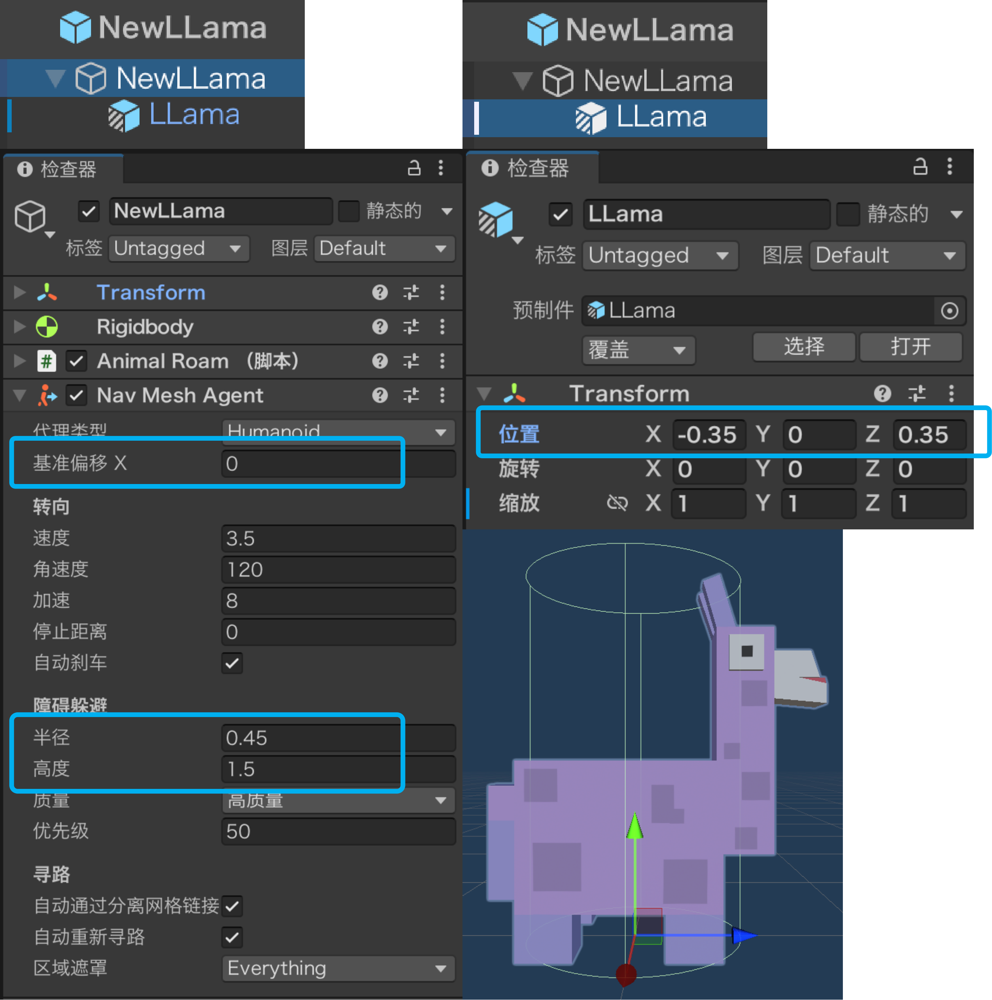
羊驼（LLama）

猪（Pig_pink1）
| 动物 | 基准偏移 | 半径 | 高度 | 子对象 X | 子对象 Z |
|---|---|---|---|---|---|
| 猫（Cat） | 0 | 0.5 | 0.8 | -0.3 | 0.2 |
| 鸡（Chiken） | 0 | 0.3 | 0.8 | -0.25 | 0.15 |
| 牛（Cow） | 0 | 0.45 | 0.9 | -0.35 | 0.4 |
| 大象（Elephent） | 0 | 0.5 | 0.9 | -0.35 | 0.25 |
| 羊驼（LLama） | 0 | 0.45 | 1.5 | -0.35 | 0.35 |
| 猪（Pig_pink1） | 0 | 0.4 | 0.8 | -0.35 | 0.3 |
数值取自工程里六个 New* 预制体：壳＝导航网格代理（基准偏移 / 半径 / 高度），子对象＝模型相对壳的原点偏移（X / Z）。半径 / 高度与烘焙出来的可行走区域保持一致即可，不必死磕某个数；子对象 X / Z 把模型摆回壳正中心，偏多少因模型而异。
定点巡逻 · 巡逻点与 GetChild
什么叫定点巡逻
上一页的动物是随机抽一个点走过去——抽到哪儿就去哪儿，走起来像没目的乱逛。
定点巡逻正好相反：先在场地里定好几个站点，让动物按 1 → 2 → 3 → 4 → 1 的顺序一站一站走，走完最后一个绕回第一个，一圈一圈巡下去。保安巡更、景区观光车，走的都是这种路线。
注意「走法」一点没变：交给代理的还是上一页那句 agent.SetDestination(点)，绕墙、贴地、算路线全归代理。这一页变的只有一件事——这个「点」从哪来：上一页是随机抽的，这一页是按顺序取的。
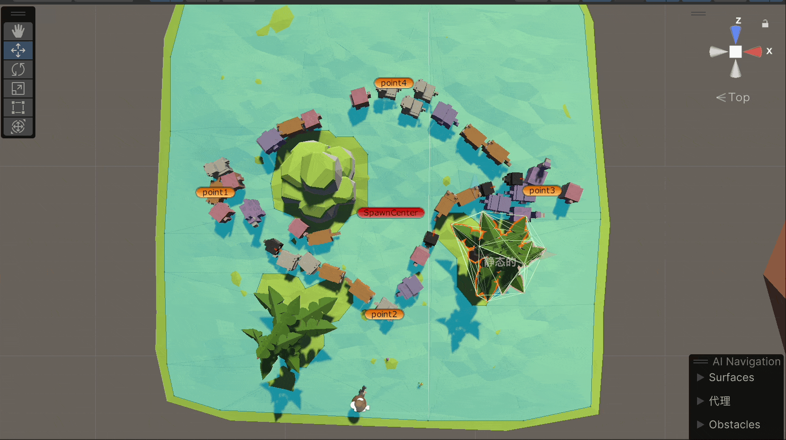
巡逻点：一个只有位置的空对象
- 它就是个空对象：在场景里放几个空对象（
GameObject > Create Empty），改名成Point1~Point4。这里以 4 个为例，点多点少都行，原理一样。 - 为什么不直接拿模型的
Transform：代理要的只是一个位置；空对象最轻，也最「只表示一个点」——挪点就是挪这一个空对象，不会牵动任何模型。 - 必须设「标签图标（Label）」：空对象在场景视图里没有形状，不设图标根本看不见。选中点 → 点检查器里对象名字左边那个小方块（选择图标（Select Icon））→ 挑一个标签图标，名字就会一起标在场景里（课件15「游戏管理器 · 空对象 · 标签图标」是同样的做法），几个点都设一遍，站位才看得清、好对齐。
- 点要落到地面上：摆的时候顺手把
y调到地面高度，别让点悬在半空；几个点尽量分散，别贴着墙——代理还得绕得过去。
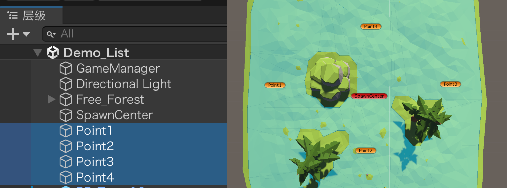
把一组点装进一个父对象
四个点散在层级窗口里，脚本没地方「一把抓」。新建一个空对象改名 Waypoints，把 Point1~Point4 直接拖成它的子物体（中间别再套一层分组）——这样「一组点」就成了一个东西，脚本里只要留一个槽位就够了。
好处很直接：加点就是新建一个子物体，删点就是删一个子物体，脚本一个字都不用改——不用手动填数组长度、不用一个个拖槽位，也不会出现「槽空了取到 null」。
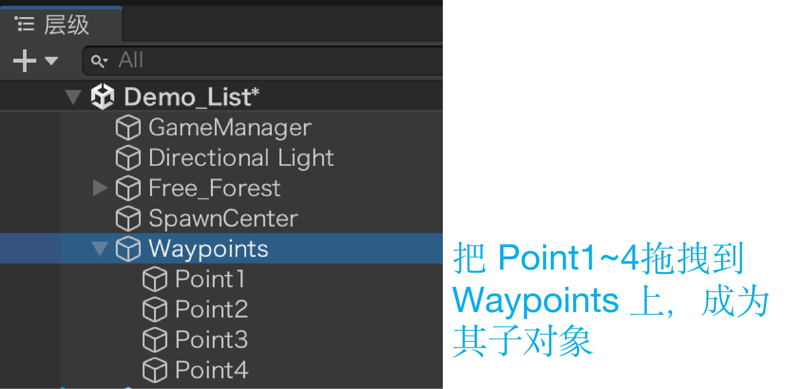
⚠️ 父对象下面只放巡逻点：这个父对象是给脚本按序号取点用的——模型、特效、摄像机只要挂进去，都会被当成一个巡逻点；点也别再套一层分组。检查方法：选中 Waypoints，看它的子物体是不是正好都是 Point1~PointN。
完整脚本 · 从拿到代理到交出目标点
这一页在上一页的 AnimalRoam 上只补几处：加两个字段（waypointRoot、index）、新增 MoveToNextPoint()。下面贴的是完整脚本——上一页的 agent 字段、Start、Update、MoveToRandomPoint() 都原样留着，整段复制覆盖原文件就行，不用自己找地方插。绕墙、贴地、算路线照旧全归代理，脚本只负责把「第几个点」交出去。
// AnimalRoam.cs —— 第 4 版：点不再随机抽，改成按顺序取巡逻点（完整脚本）
// 整段可以直接复制、覆盖原文件；标 ①②③ 的是这一页新加的
using UnityEngine;
using UnityEngine.AI;
public class AnimalRoam : MonoBehaviour
{
public float roamRadius = 8f; // 在多大范围内溜达（随机走时才用得上）
public float waitTime = 2f; // 到点后歇多久再走
private NavMeshAgent agent;
private float timer;
public Transform waypointRoot; // ① 新增：巡逻点父对象，检查器里把 Waypoints 拖进来
private int index = 0; // ① 新增：序号 —— 0 就是第一个点
void Start()
{
agent = GetComponent<NavMeshAgent>();
MoveToRandomPoint(); // 下一页作业：把这里换成 MoveToNextPoint()
}
void Update()
{
timer += Time.deltaTime;
// 走到目标点了（而且歇够了）→ 换一个新目标
if (!agent.pathPending && agent.remainingDistance < 0.5f && timer > waitTime)
{
MoveToRandomPoint(); // 下一页作业：把这里换成 MoveToNextPoint()
timer = 0f;
}
}
void MoveToNextPoint() // ② 新增：走到下一个巡逻点
{
agent.SetDestination(waypointRoot.GetChild(index).position);
index = (index + 1) % waypointRoot.childCount; // ③ 新增：到末尾绕回第一个
}
void MoveToRandomPoint()
{
Vector3 randomPoint = transform.position + Random.insideUnitSphere * roamRadius;
randomPoint.y = transform.position.y; // 只在水平面上找
NavMeshHit hit;
// 把这个点「贴」到导航网格上，取最近的可行走位置
if (NavMesh.SamplePosition(randomPoint, out hit, roamRadius, NavMesh.AllAreas))
{
agent.SetDestination(hit.position);
}
}
}MoveToNextPoint() 已经写好了，可 Start / Update 里调的还是随机走（代码里标了「下一页作业」的那两行）——所以这一页跑起来仍是随机溜达。下一页作业再把这两处调用换成 MoveToNextPoint()，顺带给它加上「没挂巡逻点就退回随机」的判断。
取点逻辑 · 一图看懂
左边：父对象下挂着 4 个点，GetChild(0)~GetChild(3) 从上到下依次对应。右边：每到一个点，index 加一取下一个；加到 childCount 就取余绕回 0。
代码讲解
GetChild(index)是「按序号取子物体」：取父对象下第index个直接子物体（从0开始数），再.position拿到它的位置。childCount是「有几个子物体」：它同时也是GetChild的序号上限——挂几个点就按几个点绕，不用手动填长度。% waypointRoot.childCount是「绕圈」：index加到4时取余变回0，于是走到最后一个点会自动从第一个重新开始。- 路线顺序 ＝ 层级顺序：
GetChild(0)是层级窗口里最上面那个；顺序不对，就在层级里上下拖一下。 - ⚠️ 只看「直接子物体」：点必须直接挂在父对象下面；中间再套一层分组，就取不到了。
- 序号上限不用手填：
childCount是运行时数出来的真实子物体数——加一个点它自己变大，删一个点它自己变小，代码一个字都不用改。 - 交给代理的还是那句
SetDestination：这一页只换了括号里的东西——从上一页的随机点，换成巡逻点的位置。
把点交给脚本：先存预制体，再拖进槽位
① 存成预制体：选中 Waypoints，把它拖进项目窗口的 Prefabs 文件夹，存成一个预制体资产。为什么非要这一步：动物的 AnimalRoam 挂在预制体上，而预制体上的引用只能指向资产，指不了场景里的对象——不先存成预制体，下一步拖进槽位是存不住的。

② 拖进槽位：选中动物预制体上的 AnimalRoam，从 Prefabs 里把 Waypoints 预制体拖进 waypointRoot 槽位——挂几个点就巡几个；以后想加点，就在 Waypoints 预制体下新建一个子物体，脚本一个字都不用改。

waypointRoot 这个字段——父对象建好了、也存成预制体了，但没拖进槽位，它还是空的。症状很好认：动物一动不动，控制台还会报 NullReferenceException。MoveToNextPoint() 接进 Start / Update，再加一个判断——挂了巡逻点就走定点，一个都没挂就退回上一页的随机走。